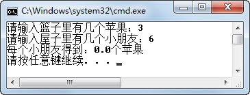

2.7 Java表达式
2.7.1 Java表达式概述
表达式是符合一定语法规则的运算符和操作数的组合。下面列举了一些表达式，需要注意的是，单个操作数也是表达式。
x
y * 5
(a-b) * c - 4
(x>y)&&(m<=n)
表达式的值：对表达式中的操作数进行运算得到的结果。
表达式的类型：表达式的值的数据类型即为表达式的类型。
2.7.2 表达式的运算顺序
Java表达式按照运算符的优先级从高到低的顺序进行运算，优先级相同的运算符按照事先约定的结合方向进行运算。运算符的优先级和结合性如表2.9所示。需要注意的是，程序员在编写代码时，是不会去记运算符的优先级的，当不确定运算符的优先级时，程序员通常的做法就是对先运算的部分加上小括号，保证此运算优先执行。
表2.9 Java运算符优先级及结合性
| 优先级 | 运算符 | 结合性 |
|---|---|---|
| 1 | () [] . | 从左向右 |
| 2 | ! +（正） -（负） ~ ++ -- | 从右向左 |
| 3 | * / % | 从左向右 |
| 4 | +（加） -（减） | 从左向右 |
| 5 | << >> >>> | 从左向右 |
| 6 | < <= > >= instanceof | 从左向右 |
| 7 | == != | 从左向右 |
| 8 | &（按位与） | 从左向右 |
| 9 | ^ | 从左向右 |
| 10 | | | 从左向右 |
| 11 | && | 从左向右 |
| 12 | || | 从左向右 |
| 13 | ?: | 从右向左 |
| 14 | = += -= *= /= % = &= |= ^= ~= <<= >>= >>>= | 从右向左 |
下面的例子看起来很简单，但作为程序员，总是在不经意间犯下这样的错误。当程序运行结果和预期结果有差异时，往往不容易找出错误所在。
import java.util.Scanner;
class ShareApple {
public static void main(String[] args) {
int appleNum = 0; //苹果数
int stuNum = -1; //小朋友数
double stuApple = -1; //每个小朋友得到多少苹果
Scanner input = new Scanner(System.in);
System.out.print("请输入篮子里有几个苹果：");
appleNum = input.nextInt();
System.out.print("请输入屋子里有几个小朋友：");
stuNum = input.nextInt();
stuApple = appleNum / stuNum;
System.out.println("每个小朋友得到：" + stuApple + "个苹果");
}
}
输入两组不同的值（苹果数和小朋友数），如图2.15和图2.16所示，其中第二组得到的并不是预期的结果。原因在于stuApple = appleNum / stuNum这条语句，首先运算的是appleNum / stuNum，之后再进行赋值运算。appleNum / stuNum这个表达式中的两个操作数都是int型的，其运算结果也是int型，所以出现了3除以6，得到int型0的情况，再将int型的0赋给double类型的stuApple，结果显示出0.0。

图2.15 Java表达式执行示例一

图2.16 Java表达式执行示例二